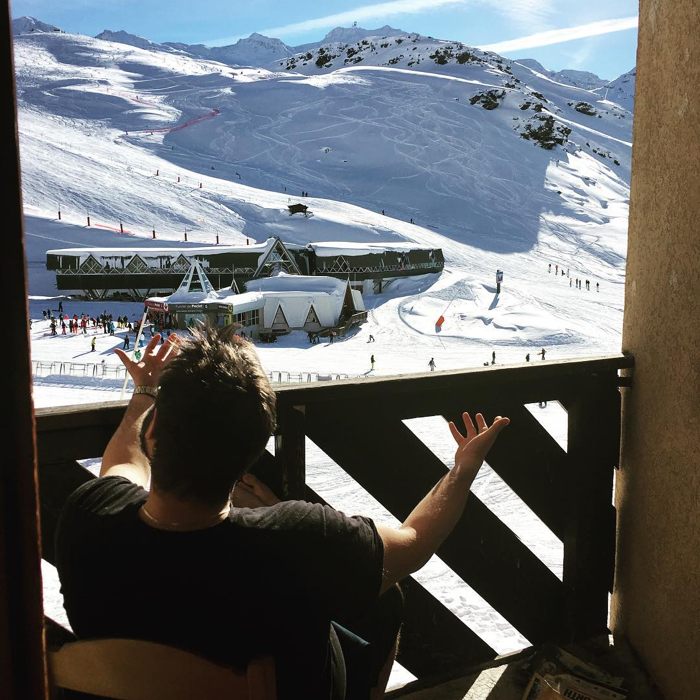

Life as a freelance writer from a resort in the French Alps.
Writer
Val Thorens, French Alps
Freelance
At the moment I'm in Val Thorens, a resort in the French Alps. I've been skiing here for the last few months. I'm a freelance writer and photographer so I'm just writing and taking photos. The site I write for the most is How-to Geek. Most days I just bang out an article and then go skiing. It's not so bad.
Remote work was something I wanted to do but writing specifically I kind of fell into. While I was in college I experimented with different remote gigs like web design and publishing. Writing was the one that stuck. Once I started, the work snowballed and now it's my main source of income.
The only real challenge I've had is finding fast, affordable Wi-Fi connections. Right now, my only decent option is to pay about €120 a month for 100GB of data which is kind of crazy. I’m used to it at this point, and I'm lucky my work doesn't need super fast internet, but it's definitely annoying.
Other than that, there's obviously missing friends and stuff back home. WhatsApp and Facebook are pretty good at patching over the cracks there though. I'm also a social guy so I tend to quite quickly make friends to hang out with which helps as well. I think being an introvert is a lot harder as a nomad so again, I'm kind of lucky that my personality works with what I do.
It really sucks if you're sick alone in a new country but that's only happened a few times.
Here is pretty good! I'm 2500m up in the middle of the mountains with lots of great skiing around. I've also worked on a boat in the middle of the ocean (no internet obviously!), all around Europe, America, Asia and so on.
There's nowhere amazing I can think of because if I'm somewhere awesome, I don't work, I just enjoy it! I work at home or in a hotel or bar or cafe or whatever. Most of them are pretty interchangeable.
"Side note, working on the beach looks awesome in photos but is super impractical. Trust me, I've tried."
Poolside workspace
I don't. The whole freelance thing means I just work when I want to. Most of my editors are in US time zones so I tend to spend an hour or two actually writing in the morning, submit something, then go about my day. At some point during the US work day, I'll pop on my laptop for half an hour and send in some new pitches, respond to feedback and so on.
I've a MacBook Pro, iPhone 6S and a Canon 5D MKIII that all get used pretty much daily. Most of the other tools are software. I use Photoshop and Lightroom for editing, Ulysses for writing, OmniFocus to keep on top of all my pitches, Spotify to listen to music, Slack and Trello to stay in touch with editors, Keyboard Maestro to automate as much of my workflow as possible and that's about it. Writing is one of those jobs you can literally do with the worst gear. I've written articles on my iPhone in a bar.
Don't settle for shit jobs.
Decide why you want to do it and then make your lifestyle fit that. Too many digital nomads just end up working ridiculous hours in generic coffee shops in Asia.
Don't call yourself a digital nomad. It's an awful title!
You've only got yourself to answer to. You need to really know who you are, how you react to weird situations and how to motivate yourself. If you can't make yourself work when you need to, you're just on holiday.
I'm back home to Ireland for a bit and then I'm going to explore shorter, faster more intense trips. Plans for the summer include a few weeks sailing in Greece, about 10 days hiking in Ireland, some cycle touring in Scotland, and a few stints in different cities around Europe.
You can find Harry on his personal site at HarryGuinness.com or on Twitter @HarryGuinness.